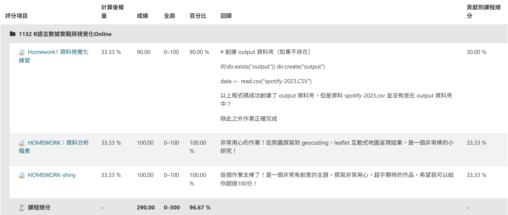
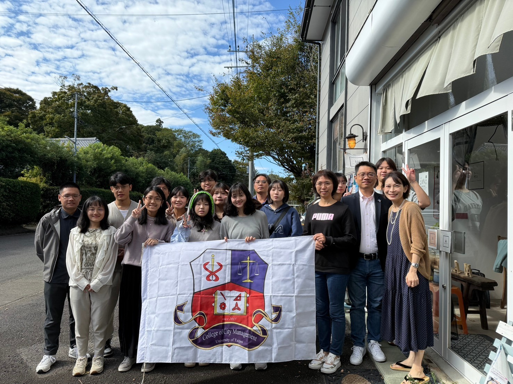
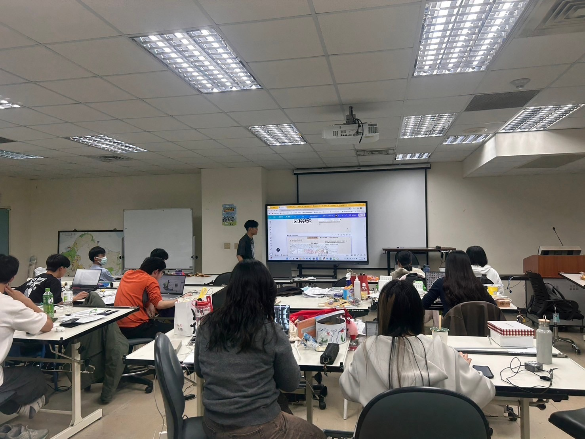
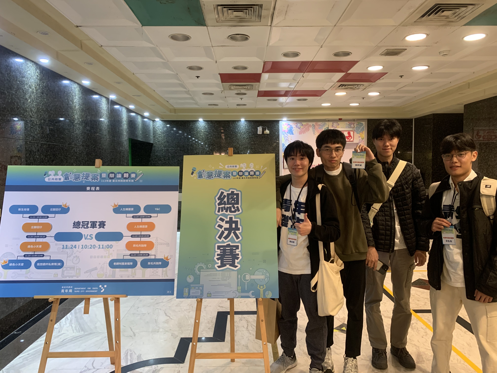
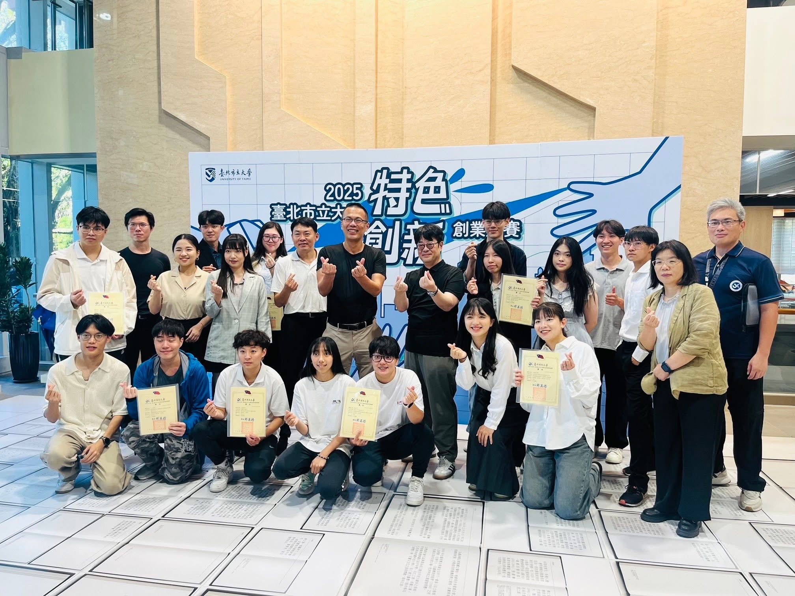
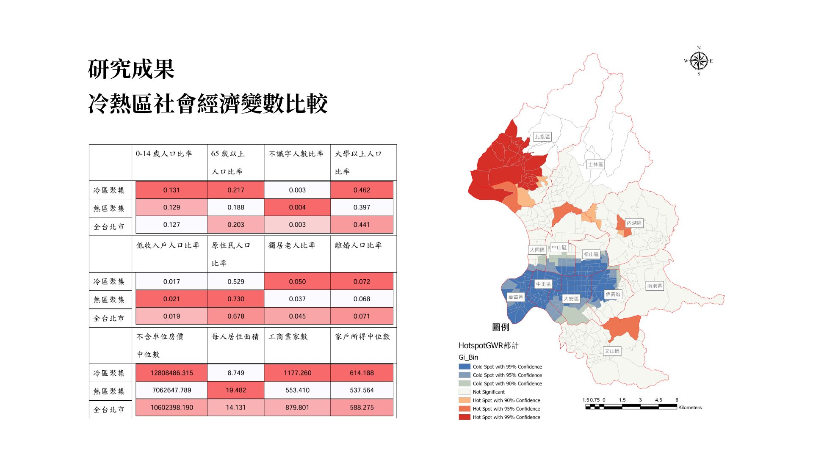

Experience 經歷
獎項
臺北市立大學城發系 :
🏅 校內書卷獎 111-2 、 112-1 、 113-2 學期
🏅 2023全國大觀盃尋秘北海岸 好「石」在ta pin 銀獎
🏅 北市大創新創業競賽第二名
🏅 臺北市政府青年局公共政策創意提案暨辯論競賽入圍決賽
🏅 台北探索校內專題獲得一萬元獎學金
證照
📑 多益金色證書 860
📑 CASA 資料科學專業能力認證通過
工作經歷
💼 台北市住宅及都市更新中心實習生 112年7~8月
- 協助都市更新相關資料整理
- 協助召開南機場都市更新案說明會
💼 自強工程顧問有限公司實習生 114年7~8月
- CAD地形圖轉換GIS之詮釋資料
- 協助GIS空間資料處理
- 參與1:1000墾丁國家公園地形圖採購案調繪初編
活動參與
中研院人社中心的「Cloud Computing and 3D Mapping with Geemap and Leafmap Workshop」工作坊
第六屆國土空間圖資GIS競賽研習活動
已修習之空間資訊課程
台大計算機網路中心 R語言視覺化
我在當中學到了R語言的各種套件以及數據清理分析的方法，更重要的是 學習到了爬蟲知識，讓資料的取得功力更上層樓。

地理資訊系統 (共6學分)
ARCGIS、QGIS
衛星遙測學 (共3學分)
GOOGLE EARTH ENGINE
已修習之統計應用課程
統計學、大數據分析、計量地理 (共9學分)
SPSS、EXCEL
國際交流
日本筑波移地教學規劃工作坊

校內活動
擔任城發系學會教學組講師，負責教學弟妹PS、AI、QGIS等軟體操作，並自製教材，協助學弟妹提升設計技能。

台北生命故事暨健康科技園區
（臺北市政府青年局113年度公共政策創意提案暨辯論競賽）入圍決賽

北市大創新創業競賽第二名
建構納博聚思空間不動產資訊整合平台創業提案，本次提案結合了不動產、空間資訊， 透過串接後端API實現環域分析，透過open street map提供豐富之POI地理資訊，並結合前端網頁設計， 提供使用者友善的操作介面，讓使用者能夠輕鬆查詢鄰里相關資訊。

台北探索校內專題
應用GIS探討不同社會經濟族群的空間不平等 — 以公園用地為例，本專題探討臺北市不同社會經濟族群在公園用地的空間分布情形， 透過GIS技術進行空間分析，並結合社會經濟資料，分析不同族群在公園用地的可及性與分布差異， 以期提供政策制定者參考，促進城市空間的公平與正義。
